&
Se déplacer dans le gestionnaire de fichiers : Le site Xfce.
Se déplacer dans le gestionnaire de fichiers Thunar


Pour se déplacer dans la zone principale, indiqué « 4 », double clic > Documents ou Images...
Exemple, se déplacer dans le dossier Musique sous « debian » (l'utilisateur) :
Double clic > Musique

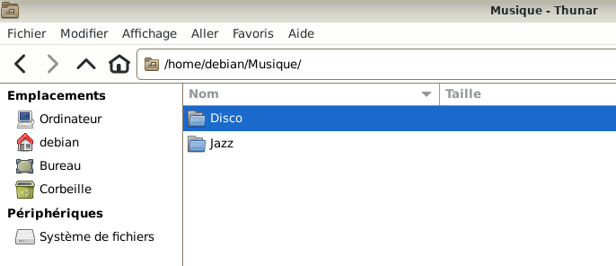
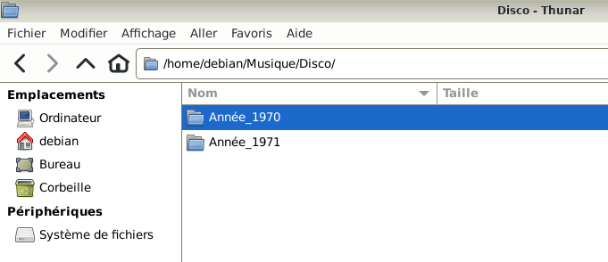
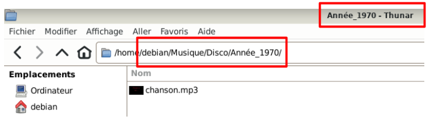
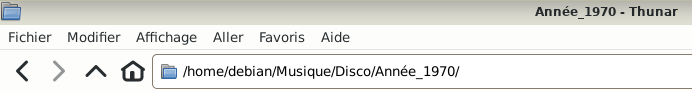
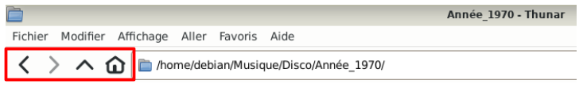
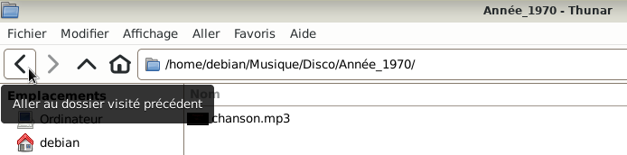
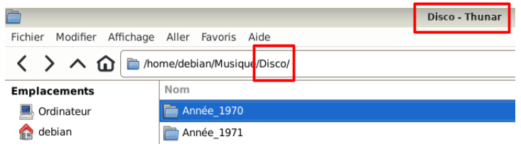
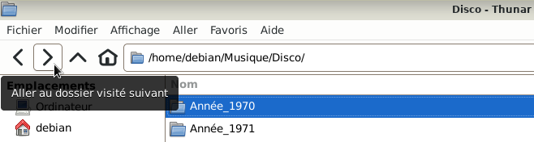
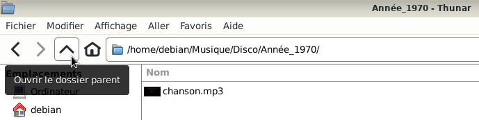
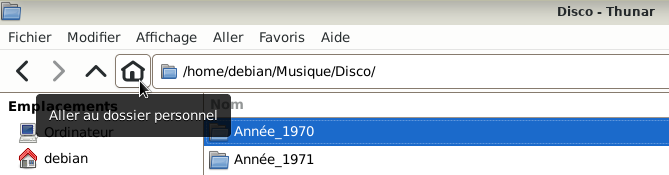
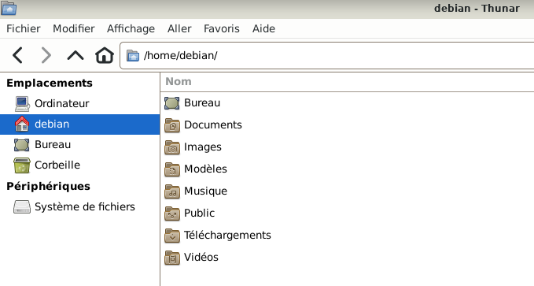

Pour plus de fonctionnalités : Simple clic > Aide > Guide d'utilisation > Lire en ligne

Informations sur le logiciel libre et Merci.
Marques déposées :
Ce site ne fait pas partie de Debian, n'est pas produit par le projet
Debian, ni approuvé par le projet Debian.
Ce site n'est pas affilié à Debian. Debian est une marque déposée appartenant
à Software in the Public Interest, Inc.
Contribuer :
Ce site ne fait pas partie de XFCE, n'est pas produit par le projet
XFCE, ni approuvé par le projet XFCE.
Ce site n'est pas affilié à XFCE.
Ce site est juste réalisé par un passionné.